CODING AGENTS AS PIXEL WORLD MODELS
traex/GPT-6.1-Sol · 0084
点击播放 · 原生 RGB 像素
此结果可播放，但该运行尚未通过最终提交审核。页面展示不代表评测通过。
逐轮保存的候选
回放视频、检查图与代码变化。
每份候选均可单独播放。实际图片检查记录在下方工具轨迹中。
候选 01播放与检查图
点击播放 · 原生 RGB 像素
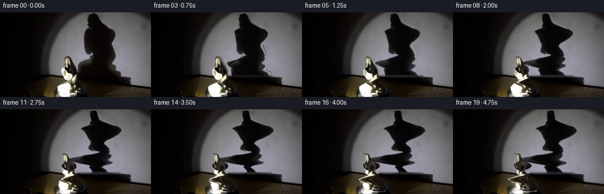
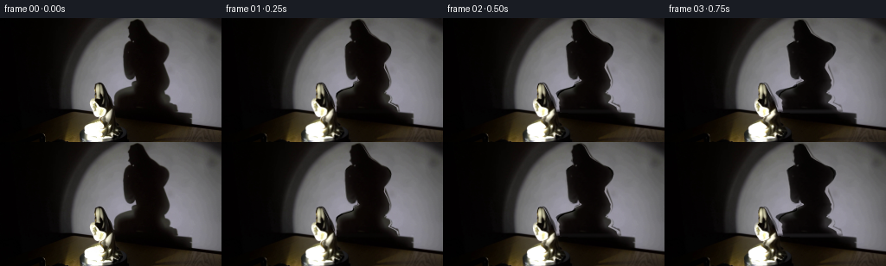
展开代码变化
--- 上一保存版本
+++ 本次保存版本
@@ -0,0 +1,172 @@
+from pathlib import Path
+import numpy as np
+import cv2
+from PIL import Image, ImageDraw
+from scipy.ndimage import gaussian_filter, gaussian_filter1d, map_coordinates
+from scipy.interpolate import PchipInterpolator
+from artifact_io import save
+
+ROOT=Path(__file__).resolve().parent
+W,H=256,144
+S=4
+# The original photograph is both the texture source and the locked camera plate.
+orig=np.asarray(Image.open(ROOT/'first_frame.png').convert('RGB'),dtype=np.float32)
+
+def polygon_mask(points):
+ im=Image.new('L',(W*S,H*S)); ImageDraw.Draw(im).polygon([(round(x*S),round(y*S)) for x,y in points],fill=255)
+ return np.asarray(im,dtype=np.float32)/255
+
+statue_poly=[(111.4,75.7),(113.7,75.2),(116.4,76),(118.2,78),(120,81.7),(121.7,85),(123.5,89),(125.5,94),(128.4,100),(130.9,104.5),(131.9,110),(132.1,116),(132.8,121.5),(134,125),(137.6,128.8),(139.3,132.1),(138.6,135.3),(135.5,137.7),(130.6,139.3),(114,140),(104,140),(98.1,139),(96.2,136),(97,130),(98.1,125.9),(104,122.9),(110.7,120.8),(115.5,119.2),(116.4,116.4),(114.8,113.8),(110.4,113.6),(107.6,111),(106.2,107.5),(104.7,103.5),(104.3,100),(105.2,97.6),(107.8,95.3),(109.4,94.5),(109.1,90),(109.3,86),(109.8,79.3)]
+shadow_poly=[(150,2.2),(156,1.3),(160.8,2.5),(164,5.7),(166.5,10.1),(170.7,17),(176,21.3),(184,26.2),(190,28.7),(194,33),(195.5,37.3),(194.6,43.2),(192.8,47.6),(189.2,52.4),(188.8,57.4),(192.5,65.4),(195,71.9),(195,76.9),(193.8,80.8),(191.4,84.4),(188.2,87.1),(193,87.6),(195.5,90.7),(196.5,94.2),(194,98.2),(200.5,101.3),(203.9,103.5),(204.9,109.5),(221.7,111.3),(221.8,122.5),(181,118),(131.8,113),(131.5,101.1),(132.4,92.2),(135.1,87.2),(141.5,83.3),(150.3,80.8),(153,79.4),(153.4,75),(159,72.8),(156.5,67.3),(153.5,69.9),(149.2,71.2),(146.1,69.5),(143.9,64.5),(142.7,58),(142.4,49.3),(142.5,40),(143.6,33.7),(145.7,30),(150.3,27.3),(148.4,24.2),(149.7,21.6),(148.8,17.8),(149.3,14.1),(148.5,11.6),(148.6,8.3),(149.7,6)]
+objmask=polygon_mask(statue_poly)
+shmask=polygon_mask(shadow_poly)
+# Subpixel sampling, with a stationary tabletop and spotlight falloff.
+ys,xs=np.mgrid[:H*S,:W*S].astype(np.float32)
+X=(xs+.5)/S-.5; Y=(ys+.5)/S-.5
+plate=cv2.resize(orig,(W*S,H*S),interpolation=cv2.INTER_CUBIC)
+objmask=gaussian_filter(objmask,.75)
+shmask=gaussian_filter(shmask,1.25)
+
+# Fit the unobstructed illuminated wall; retain all the actually observed pixels.
+y,x=np.mgrid[:H,:W].astype(np.float64)
+wall_line=103.8+.097*np.maximum(0,x-65)
+wall=(y<wall_line-1.5)
+objlo=cv2.resize(objmask,(W,H),interpolation=cv2.INTER_AREA)
+shlo=cv2.resize(shmask,(W,H),interpolation=cv2.INTER_AREA)
+excl=cv2.dilate(((shlo>.04)|(objlo>.04)).astype(np.uint8),np.ones((9,9),np.uint8))>0
+valid=wall & (~excl) & (x>91)
+xx=(x-175)/85; yy=(y-65)/65
+terms=[xx**i*yy**j for i in range(5) for j in range(5-i)]
+A=np.stack(terms,axis=-1)
+fit=[]
+for k in range(3):
+ coef=np.linalg.lstsq(A[valid],orig[:,:,k][valid],rcond=None)[0]
+ fit.append(np.sum(A*coef,axis=-1))
+wallfit=np.clip(np.stack(fit,-1),0,255).astype(np.float32)
+# Inpainting is needed only on the little area where the statue hides the table.
+remove=((shlo>.01)|(objlo>.01)).astype(np.uint8)*255
+inp=cv2.inpaint(orig.astype(np.uint8),remove,5,cv2.INPAINT_TELEA).astype(np.float32)
+base=orig.copy()
+# Reconstruct wall inside the silhouette, without modifying outside the setup.
+blend=cv2.GaussianBlur(cv2.dilate(remove,np.ones((5,5),np.uint8)).astype(np.float32)/255,(0,0),.7)
+rebuild=np.where(wall[...,None],wallfit,inp)
+base=base*(1-blend[...,None])+rebuild*blend[...,None]
+bg=cv2.resize(base,(W*S,H*S),interpolation=cv2.INTER_CUBIC)
+# Wall shadow density, as measured in the photograph, including its penumbra.
+gray=plate.mean(-1); bggray=bg.mean(-1)
+shadow_alpha=np.clip(1-gray/np.maximum(bggray,1),0,.99)*cv2.dilate((shmask>.05).astype(np.uint8),np.ones((5,5),np.uint8))
+shadow_alpha=gaussian_filter(shadow_alpha,.5)
+# The round turntable casts a stationary lower shadow.
+fixed_weight=np.clip((Y-105)/6,0,1)
+fixed_shadow=shadow_alpha*fixed_weight
+moving_shadow=shadow_alpha*(1-fixed_weight)
+
+# Slice geometry, jointly constrained by the two silhouettes in the photograph.
+def profile(mask):
+ on=mask>.45
+ left=np.argmax(on,axis=1)/S-.5
+ right=(W*S-1-np.argmax(on[:,::-1],axis=1))/S-.5
+ exists=on.any(axis=1)
+ center=(left+right)/2
+ radius=(right-left)/2+.5/S
+ return center,radius,exists
+oc,orr,oe=profile(objmask)
+sc,sr,se=profile(shmask)
+oy=(np.arange(H*S)+.5)/S-.5
+# Perspective projection onto the wall: raised hands and lap lie closer to the lamp.
+syof=PchipInterpolator([75.2,80,90,97,106,114,121,128,136,140],[1.5,9.5,26,38,62,78,88,98,108,113],extrapolate=True)
+osof=PchipInterpolator([1.5,9.5,26,38,62,78,88,98,108,113],[75.2,80,90,97,106,114,121,128,136,140],extrapolate=True)
+alpha=np.deg2rad(36)
+mag=2.15
+axis=120.; shadowaxis=176.
+interp=lambda a,t: np.interp(t,oy,a)
+cs=interp(sc,syof(oy)); rs=interp(sr,syof(oy))/mag
+zcenter=((cs-shadowaxis)/mag-(oc-axis)*np.cos(alpha))/np.sin(alpha)
+zcenter=np.clip(zcenter,-15,15)
+zcenter=gaussian_filter1d(zcenter,3)
+depth=np.sqrt(np.maximum(3.0**2,(rs**2-orr**2*np.cos(alpha)**2)/np.sin(alpha)**2))
+depth=np.clip(depth,2.5,20)
+depth=gaussian_filter1d(depth,3)
+# Use the observed statue image as the surface texture.
+texture=plate
+
+def sample(arr,xx,yy):
+ return cv2.remap(arr,((xx+.5)*S-.5).astype(np.float32),((yy+.5)*S-.5).astype(np.float32),cv2.INTER_LINEAR,borderMode=cv2.BORDER_REPLICATE)
+
+def statue(theta):
+ c=np.repeat(oc[:,None],W*S,axis=1); r=np.maximum(orr[:,None],.05)
+ d=depth[:,None]; zc=zcenter[:,None]
+ ct,st=np.cos(theta),np.sin(theta)
+ xc=axis+(c-axis)*ct+zc*st
+ R=np.sqrt(r*r*ct*ct+d*d*st*st)
+ u=(X-xc)/R
+ beta=np.arctan2(d*st,r*ct)
+ phi=beta-np.arccos(np.clip(u,-1,1))
+ tx=c+r*np.cos(phi)
+ col=sample(texture,tx,Y)
+ mask=sample(objmask,tx,Y)*np.clip((1-np.abs(u))*R*S+.5,0,1)*oe[:,None]
+ # The grazing-angle lighting changes continuously as the porcelain turns.
+ nx=np.cos(phi)/r; nz=np.sin(phi)/d
+ length=np.sqrt(nx*nx+nz*nz)+1e-6
+ nx/=length; nz/=length
+ nrot_x=nx*ct+nz*st; nrot_z=-nx*st+nz*ct
+ source_phi=-np.arccos(np.clip((tx-c)/r,-1,1))
+ sx=np.cos(source_phi)/r; sz=np.sin(source_phi)/d
+ sl=np.sqrt(sx*sx+sz*sz)+1e-6; sx/=sl; sz/=sl
+ Lx,Lz=-.68,-.73
+ oldlight=.30+.70*np.maximum(0,sx*Lx+sz*Lz)
+ newlight=.30+.70*np.maximum(0,nrot_x*Lx+nrot_z*Lz)
+ ratio=np.clip(newlight/oldlight,.45,1.65)
+ col=col*ratio[...,None]
+ # Glazed ceramic retains subtle, moving specular reflections.
+ spec=np.maximum(0,nrot_x*(-.35)+nrot_z*(-.936))**28
+ spec0=np.maximum(0,sx*(-.35)+sz*(-.936))**28
+ col+=((spec-spec0)*8)[...,None]
+ return np.clip(col,0,255),mask
+
+def shadow(theta):
+ source_y=osof(Y[:,0])
+ c=interp(oc,source_y)[:,None]; r=np.maximum(interp(orr,source_y)[:,None],.1)
+ d=interp(depth,source_y)[:,None]; zc=interp(zcenter,source_y)[:,None]
+ gamma=alpha+theta
+ # Preserve exact initial projected contours, including their optical softness.
+ initialR=np.sqrt((r*np.cos(alpha))**2+(d*np.sin(alpha))**2)
+ newR=np.sqrt((r*np.cos(gamma))**2+(d*np.sin(gamma))**2)
+ scale=newR/initialR
+ actualc=sc[:,None]; actualr=np.maximum(sr[:,None],.1)
+ center0=(c-axis)*np.cos(alpha)+zc*np.sin(alpha)
+ center1=(c-axis)*np.cos(gamma)+zc*np.sin(gamma)
+ xc=actualc+mag*(center1-center0)
+ # Distant wall projection of the same rotating horizontal cross sections.
+ source_x=actualc+(X-xc)/scale
+ a=sample(moving_shadow,source_x,Y)
+ a*=np.clip((actualr*scale-np.abs(X-xc))*S+1,0,1)
+ a*=se[:,None]
+ return gaussian_filter(a,.65)
+
+def render(theta):
+ a=shadow(theta)
+ # Fixed pedestal shadow and moving silhouette combine, rather than add.
+ out=bg*(1-fixed_shadow[...,None])
+ out=out*(1-a[...,None])
+ col,m=statue(theta)
+ out=out*(1-m[...,None])+col*m[...,None]
+ return out
+
+baseline=render(0)
+# Small photographic residuals (sensor texture and the object's edge antialiasing)
+# are transported with the object where possible and fade only locally.
+residual=plate-baseline
+frames=[]
+for i in range(20):
+ theta=np.deg2rad(3.6*i)
+ out=render(theta)
+ # Retain the stationary photographed plate exactly away from changing layers.
+ # The initial reconstruction error is modest, and is blended out gradually.
+ out+=residual*np.exp(-(theta/.22)**2)
+ low=cv2.resize(np.clip(out,0,255),(W,H),interpolation=cv2.INTER_AREA)
+ frames.append(np.clip(np.rint(low),0,255).astype(np.uint8))
+frames=np.stack(frames)
+frames[0]=orig.astype(np.uint8)
+save(frames,ROOT)
+Image.fromarray(np.clip(base,0,255).astype('uint8')).save(ROOT/'.tmp/background.png')
候选 02播放与检查图
点击播放 · 原生 RGB 像素

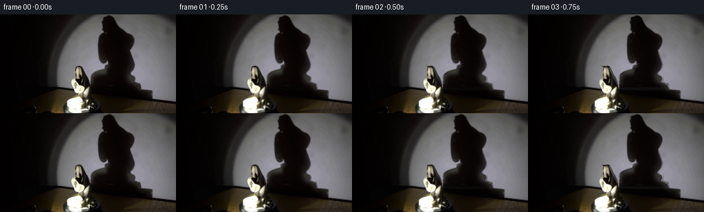
展开代码变化
--- 上一保存版本
+++ 本次保存版本
@@ -83,10 +83,12 @@
cs=interp(sc,syof(oy)); rs=interp(sr,syof(oy))/mag
zcenter=((cs-shadowaxis)/mag-(oc-axis)*np.cos(alpha))/np.sin(alpha)
zcenter=np.clip(zcenter,-15,15)
-zcenter=gaussian_filter1d(zcenter,3)
+zcenter=gaussian_filter1d(zcenter,16)
depth=np.sqrt(np.maximum(3.0**2,(rs**2-orr**2*np.cos(alpha)**2)/np.sin(alpha)**2))
depth=np.clip(depth,2.5,20)
-depth=gaussian_filter1d(depth,3)
+depth=gaussian_filter1d(.72*orr+1.5,9)
+zcenter=np.interp(oy,[75,85,95,105,112,119,126,135,140],[-5,-4,-1,1,0,-3,-4,-1,0])
+zcenter=gaussian_filter1d(zcenter,12)
# Use the observed statue image as the surface texture.
texture=plate
@@ -159,7 +161,7 @@
residual=plate-baseline
frames=[]
for i in range(20):
- theta=np.deg2rad(3.6*i)
+ theta=np.deg2rad(2.5*i)
out=render(theta)
# Retain the stationary photographed plate exactly away from changing layers.
# The initial reconstruction error is modest, and is blended out gradually.
候选 03播放与检查图
点击播放 · 原生 RGB 像素

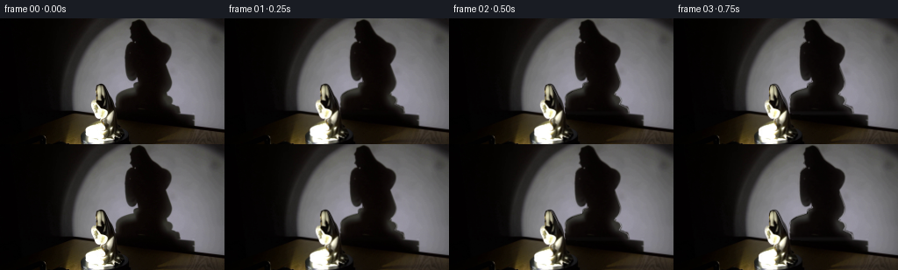
展开代码变化
--- 上一保存版本
+++ 本次保存版本
@@ -69,6 +69,8 @@
exists=on.any(axis=1)
center=(left+right)/2
radius=(right-left)/2+.5/S
+ center[~exists]=np.interp(np.flatnonzero(~exists),np.flatnonzero(exists),center[exists])
+ radius[~exists]=0
return center,radius,exists
oc,orr,oe=profile(objmask)
sc,sr,se=profile(shmask)
候选 04播放与检查图
点击播放 · 原生 RGB 像素
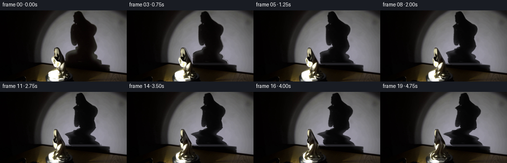
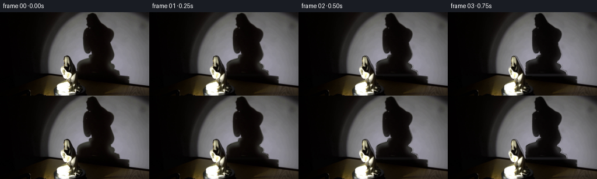
展开代码变化
--- 上一保存版本
+++ 本次保存版本
@@ -163,7 +163,7 @@
residual=plate-baseline
frames=[]
for i in range(20):
- theta=np.deg2rad(2.5*i)
+ theta=np.deg2rad(4.0*i)
out=render(theta)
# Retain the stationary photographed plate exactly away from changing layers.
# The initial reconstruction error is modest, and is blended out gradually.
候选 05播放与检查图
点击播放 · 原生 RGB 像素

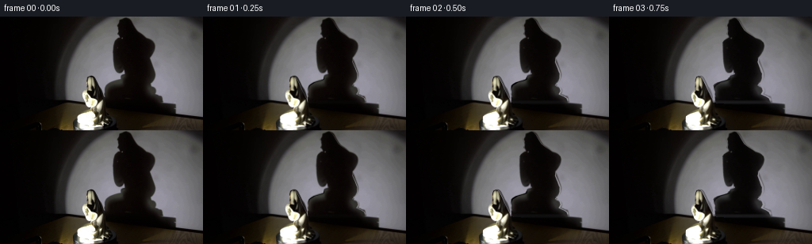
展开代码变化
--- 上一保存版本 +++ 本次保存版本 @@ -88,9 +88,10 @@ zcenter=gaussian_filter1d(zcenter,16) depth=np.sqrt(np.maximum(3.0**2,(rs**2-orr**2*np.cos(alpha)**2)/np.sin(alpha)**2)) depth=np.clip(depth,2.5,20) -depth=gaussian_filter1d(.72*orr+1.5,9) -zcenter=np.interp(oy,[75,85,95,105,112,119,126,135,140],[-5,-4,-1,1,0,-3,-4,-1,0]) -zcenter=gaussian_filter1d(zcenter,12) +depth=np.interp(oy,[75,80,85,90,95,101,108,114,120,125,132,140],[1.2,3,4.5,7,11,11,7,9,13,12,15,16]) +depth=gaussian_filter1d(depth,11) +zcenter=np.interp(oy,[75,85,95,105,112,119,126,135,140],[-5,-5,-2,-3,-3,-8,-6,-1,0]) +zcenter=gaussian_filter1d(zcenter,16) # Use the observed statue image as the surface texture. texture=plate
候选 06播放与检查图
点击播放 · 原生 RGB 像素
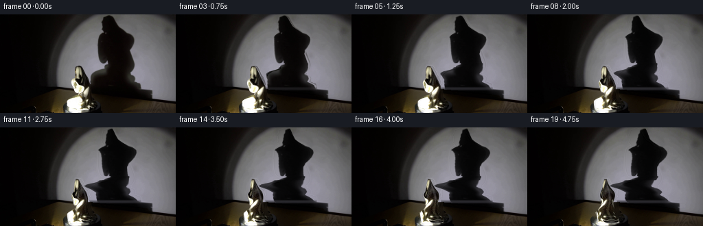
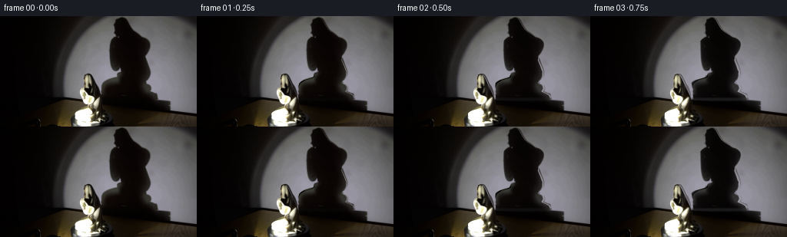
展开代码变化
--- 上一保存版本
+++ 本次保存版本
@@ -169,7 +169,7 @@
# Retain the stationary photographed plate exactly away from changing layers.
# The initial reconstruction error is modest, and is blended out gradually.
out+=residual*np.exp(-(theta/.22)**2)
- low=cv2.resize(np.clip(out,0,255),(W,H),interpolation=cv2.INTER_AREA)
+ low=orig+cv2.resize(out-plate,(W,H),interpolation=cv2.INTER_AREA)
frames.append(np.clip(np.rint(low),0,255).astype(np.uint8))
frames=np.stack(frames)
frames[0]=orig.astype(np.uint8)
可观测工具轨迹
实际执行的命令与返回图片。
命令 1exit 0
/bin/bash -lc 'ls -la && cat prompt.txt && cat GENERATION_RULES.md'
命令 2exit 0
/bin/bash -lc "cat artifact_io.py && python - <<'PY'
from PIL import Image
im=Image.open('first_frame.png'); print(im.size); im.resize((1024,576)).save('.tmp/first_large.png')
PY"命令 3exit 0
/bin/bash -lc "python - <<'PY'
from PIL import Image
im=Image.open('first_frame.png'); im.crop((85,68,148,144)).resize((504,608)).save('.tmp/statue.png')
PY"命令 4exit 0
/bin/bash -lc "python - <<'PY'
from PIL import Image,ImageDraw
im=Image.open('first_frame.png').resize((1024,576)); d=ImageDraw.Draw(im)
for x in range(0,256,10):
d.line((x*4,0,x*4,576),fill=(80,100,140),width=1); d.text((x*4,3),str(x),fill='cyan')
for y in range(0,144,10):
d.line((0,y*4,1024,y*4),fill=(80,100,140),width=1); d.text((1,y*4),str(y),fill='cyan')
im.save('.tmp/grid.png')
PY"命令 5exit 0
/bin/bash -lc "python - <<'PY'
import numpy, PIL, scipy, cv2
print('ok',cv2.__version__)
PY"命令 6exit 0
/bin/bash -lc "python - <<'PY'
try: import skimage; print('skimage',skimage.__version__)
except Exception as e: print(e)
try: import numba; print('numba',numba.__version__)
except Exception as e: print(e)
PY"命令 7exit 0
/bin/bash -lc "cat > generate.py <<'PY'
from pathlib import Path
import numpy as np
import cv2
from PIL import Image, ImageDraw
from scipy.ndimage import gaussian_filter, gaussian_filter1d, map_coordinates
from scipy.interpolate import PchipInterpolator
from artifact_io import save
ROOT=Path(__file__).resolve().parent
W,H=256,144
S=4
# The original photograph is both the texture source and the locked camera plate.
orig=np.asarray(Image.open(ROOT/'first_frame.png').convert('RGB'),dtype=np.float32)
def polygon_mask(points):
im=Image.new('L',(W*S,H*S)); ImageDraw.Draw(im).polygon([(round(x*S),round(y*S)) for x,y in points],fill=255)
return np.asarray(im,dtype=np.float32)/255
statue_poly=[(111.4,75.7),(113.7,75.2),(116.4,76),(118.2,78),(120,81.7),(121.7,85),(123.5,89),(125.5,94),(128.4,100),(130.9,104.5),(131.9,110),(132.1,116),(132.8,121.5),(134,125),(137.6,128.8),(139.3,132.1),(138.6,135.3),(135.5,137.7),(130.6,139.3),(114,140),(104,140),(98.1,139),(96.2,136),(97,130),(98.1,125.9),(104,122.9),(110.7,120.8),(115.5,119.2),(116.4,116.4),(114.8,113.8),(110.4,113.6),(107.6,111),(106.2,107.5),(104.7,103.5),(104.3,100),(105.2,97.6),(107.8,95.3),(109.4,94.5),(109.1,90),(109.3,86),(109.8,79.3)]
shadow_poly=[(150,2.2),(156,1.3),(160.8,2.5),(164,5.7),(166.5,10.1),(170.7,17),(176,21.3),(184,26.2),(190,28.7),(194,33),(195.5,37.3),(194.6,43.2),(192.8,47.6),(189.2,52.4),(188.8,57.4),(192.5,65.4),(195,71.9),(195,76.9),(193.8,80.8),(191.4,84.4),(188.2,87.1),(193,87.6),(195.5,90.7),(196.5,94.2),(194,98.2),(200.5,101.3),(203.9,103.5),(204.9,109.5),(221.7,111.3),(221.8,122.5),(181,118),(131.8,113),(131.5,101.1),(132.4,92.2),(135.1,87.2),(141.5,83.3),(150.3,80.8),(153,79.4),(153.4,75),(159,72.8),(156.5,67.3),(153.5,69.9),(149.2,71.2),(146.1,69.5),(143.9,64.5),(142.7,58),(142.4,49.3),(142.5,40),(143.6,33.7),(145.7,30),(150.3,27.3),(148.4,24.2),(149.7,21.6),(148.8,17.8),(149.3,14.1),(148.5,11.6),(148.6,8.3),(149.7,6)]
objmask=polygon_mask(statue_poly)
shmask=polygon_mask(shadow_poly)
# Subpixel sampling, with a stationary tabletop and spotlight falloff.
ys,xs=np.mgrid[:H*S,:W*S].astype(np.float32)
X=(xs+.5)/S-.5; Y=(ys+.5)/S-.5
plate=cv2.resize(orig,(W*S,H*S),interpolation=cv2.INTER_CUBIC)
objmask=gaussian_filter(objmask,.75)
shmask=gaussian_filter(shmask,1.25)
# Fit the unobstructed illuminated wall; retain all the actually observed pixels.
y,x=np.mgrid[:H,:W].astype(np.float64)
wall_line=103.8+.097*np.maximum(0,x-65)
wall=(y<wall_line-1.5)
objlo=cv2.resize(objmask,(W,H),interpolation=cv2.INTER_AREA)
shlo=cv2.resize(shmask,(W,H),interpolation=cv2.INTER_AREA)
excl=cv2.dilate(((shlo>.04)|(objlo>.04)).astype(np.uint8),np.ones((9,9),np.uint8))>0
valid=wall & (~excl) & (x>91)
xx=(x-175)/85; yy=(y-65)/65
terms=[xx**i*yy**j for i in range(5) for j in range(5-i)]
A=np.stack(terms,axis=-1)
fit=[]
for k in range(3):
coef=np.linalg.lstsq(A[valid],orig[:,:,k][valid],rcond=None)[0]
fit.append(np.sum(A*coef,axis=-1))
wallfit=np.clip(np.stack(fit,-1),0,255).astype(np.float32)
# Inpainting is needed only on the little area where the statue hides the table.
remove=((shlo>.01)|(objlo>.01)).astype(np.uint8)*255
inp=cv2.inpaint(orig.astype(np.uint8),remove,5,cv2.INPAINT_TELEA).astype(np.float32)
base=orig.copy()
# Reconstruct wall inside the silhouette, without modifying outside the setup.
blend=cv2.GaussianBlur(cv2.dilate(remove,np.ones((5,5),np.uint8)).astype(np.float32)/255,(0,0),.7)
rebuild=np.where(wall[...,None],wallfit,inp)
base=base*(1-blend[...,None])+rebuild*blend[...,None]
bg=cv2.resize(base,(W*S,H*S),interpolation=cv2.INTER_CUBIC)
# Wall shadow density, as measured in the photograph, including its penumbra.
gray=plate.mean(-1); bggray=bg.mean(-1)
shadow_alpha=np.clip(1-gray/np.maximum(bggray,1),0,.99)*cv2.dilate((shmask>.05).astype(np.uint8),np.ones((5,5),np.uint8))
shadow_alpha=gaussian_filter(shadow_alpha,.5)
# The round turntable casts a stationary lower shadow.
fixed_weight=np.clip((Y-105)/6,0,1)
fixed_shadow=shadow_alpha*fixed_weight
moving_shadow=shadow_alpha*(1-fixed_weight)
# Slice geometry, jointly constrained by the two silhouettes in the photograph.
def profile(mask):
on=mask>.45
left=np.argmax(on,axis=1)/S-.5
right=(W*S-1-np.argmax(on[:,::-1],axis=1))/S-.5
exists=on.any(axis=1)
center=(left+right)/2
radius=(right-left)/2+.5/S
return center,radius,exists
oc,orr,oe=profile(objmask)
sc,sr,se=profile(shmask)
oy=(np.arange(H*S)+.5)/S-.5
# Perspective projection onto the wall: raised hands and lap lie closer to the lamp.
syof=PchipInterpolator([75.2,80,90,97,106,114,121,128,136,140],[1.5,9.5,26,38,62,78,88,98,108,113],extrapolate=True)
osof=PchipInterpolator([1.5,9.5,26,38,62,78,88,98,108,113],[75.2,80,90,97,106,114,121,128,136,140],extrapolate=True)
alpha=np.deg2rad(36)
mag=2.15
axis=120.; shadowaxis=176.
interp=lambda a,t: np.interp(t,oy,a)
cs=interp(sc,syof(oy)); rs=interp(sr,syof(oy))/mag
zcenter=((cs-shadowaxis)/mag-(oc-axis)*np.cos(alpha))/np.sin(alpha)
zcenter=np.clip(zcenter,-15,15)
zcenter=gaussian_filter1d(zcenter,3)
depth=np.sqrt(np.maximum(3.0**2,(rs**2-orr**2*np.cos(alpha)**2)/np.sin(alpha)**2))
depth=np.clip(depth,2.5,20)
depth=gaussian_filter1d(depth,3)
# Use the observed statue image as the surface texture.
texture=plate
def sample(arr,xx,yy):
return cv2.remap(arr,((xx+.5)*S-.5).astype(np.float32),((yy+.5)*S-.5).astype(np.float32),cv2.INTER_LINEAR,borderMode=cv2.BORDER_REPLICATE)
def statue(theta):
c=np.repeat(oc[:,None],W*S,axis=1); r=np.maximum(orr[:,None],.05)
d=depth[:,None]; zc=zcenter[:,None]
ct,st=np.cos(theta),np.sin(theta)
xc=axis+(c-axis)*ct+zc*st
R=np.sqrt(r*r*ct*ct+d*d*st*st)
u=(X-xc)/R
beta=np.arctan2(d*st,r*ct)
phi=beta-np.arccos(np.clip(u,-1,1))
tx=c+r*np.cos(phi)
col=sample(texture,tx,Y)
mask=sample(objmask,tx,Y)*np.clip((1-np.abs(u))*R*S+.5,0,1)*oe[:,None]
# The grazing-angle lighting changes continuously as the porcelain turns.
nx=np.cos(phi)/r; nz=np.sin(phi)/d
length=np.sqrt(nx*nx+nz*nz)+1e-6
nx/=length; nz/=length
nrot_x=nx*ct+nz*st; nrot_z=-nx*st+nz*ct
source_phi=-np.arccos(np.clip((tx-c)/r,-1,1))
sx=np.cos(source_phi)/r; sz=np.sin(source_phi)/d
sl=np.sqrt(sx*sx+sz*sz)+1e-6; sx/=sl; sz/=sl
Lx,Lz=-.68,-.73
oldlight=.30+.70*np.maximum(0,sx*Lx+sz*Lz)
newlight=.30+.70*np.maximum(0,nrot_x*Lx+nrot_z*Lz)
ratio=np.clip(newlight/oldlight,.45,1.65)
col=col*ratio[...,None]
# Glazed ceramic retains subtle, moving specular reflections.
spec=np.maximum(0,nrot_x*(-.35)+nrot_z*(-.936))**28
spec0=np.maximum(0,sx*(-.35)+sz*(-.936))**28
col+=((spec-spec0)*8)[...,None]
return np.clip(col,0,255),mask
def shadow(theta):
source_y=osof(Y[:,0])
c=interp(oc,source_y)[:,None]; r=np.maximum(interp(orr,source_y)[:,None],.1)
d=interp(depth,source_y)[:,None]; zc=interp(zcenter,source_y)[:,None]
gamma=alpha+theta
# Preserve exact initial projected contours, including their optical softness.
initialR=np.sqrt((r*np.cos(alpha))**2+(d*np.sin(alpha))**2)
newR=np.sqrt((r*np.cos(gamma))**2+(d*np.sin(gamma))**2)
scale=newR/initialR
actualc=sc[:,None]; actualr=np.maximum(sr[:,None],.1)
center0=(c-axis)*np.cos(alpha)+zc*np.sin(alpha)
center1=(c-axis)*np.cos(gamma)+zc*np.sin(gamma)
xc=actualc+mag*(center1-center0)
# Distant wall projection of the same rotating horizontal cross sections.
source_x=actualc+(X-xc)/scale
a=sample(moving_shadow,source_x,Y)
a*=np.clip((actualr*scale-np.abs(X-xc))*S+1,0,1)
a*=se[:,None]
return gaussian_filter(a,.65)
def render(theta):
a=shadow(theta)
# Fixed pedestal shadow and moving silhouette combine, rather than add.
out=bg*(1-fixed_shadow[...,None])
out=out*(1-a[...,None])
col,m=statue(theta)
out=out*(1-m[...,None])+col*m[...,None]
return out
baseline=render(0)
# Small photographic residuals (sensor texture and the object's edge antialiasing)
# are transported with the object where possible and fade only locally.
residual=plate-baseline
frames=[]
for i in range(20):
theta=np.deg2rad(3.6*i)
out=render(theta)
# Retain the stationary photographed plate exactly away from changing layers.
# The initial reconstruction error is modest, and is blended out gradually.
out+=residual*np.exp(-(theta/.22)**2)
low=cv2.resize(np.clip(out,0,255),(W,H),interpolation=cv2.INTER_AREA)
frames.append(np.clip(np.rint(low),0,255).astype(np.uint8))
frames=np.stack(frames)
frames[0]=orig.astype(np.uint8)
save(frames,ROOT)
Image.fromarray(np.clip(base,0,255).astype('uint8')).save(ROOT/'.tmp/background.png')
PY
python generate.py"命令 8exit 0
/bin/bash -lc "python - <<'PY' import generate as g for y in [77,80,85,90,95,100,105,110,115,120,125,130,135,139]: i=int(y*4) print(y,'obj center,r',round(g.oc[i],1),round(g.orr[i],1),'z,d',round(g.zcenter[i],1),round(g.depth[i],1),'shadow mapped',round(float(g.syof(y)),1),round(g.cs[i],1),round(g.rs[i],1)) PY"
命令 9exit 0
/bin/bash -lc "cp generate.py .tmp/version1.py
python - <<'PY'
p='generate.py'
s=open(p).read()
s=s.replace('zcenter=gaussian_filter1d(zcenter,3)','zcenter=gaussian_filter1d(zcenter,16)')
s=s.replace('depth=gaussian_filter1d(depth,3)','depth=gaussian_filter1d(.72*orr+1.5,9)\\nzcenter=np.interp(oy,[75,85,95,105,112,119,126,135,140],[-5,-4,-1,1,0,-3,-4,-1,0])\\nzcenter=gaussian_filter1d(zcenter,12)')
s=s.replace('theta=np.deg2rad(3.6*i)','theta=np.deg2rad(2.5*i)')
open(p,'w').write(s)
PY
python generate.py"命令 10exit 0
/bin/bash -lc "python - <<'PY'
from PIL import Image
Image.open('frames/19.png').resize((1024,576)).save('.tmp/f19.png')
PY"命令 11exit 0
/bin/bash -lc "python - <<'PY'
p='generate.py';s=open(p).read();s=s.replace('radius=(right-left)/2+.5/S\\n return center,radius,exists','radius=(right-left)/2+.5/S\\n center[~exists]=np.interp(np.flatnonzero(~exists),np.flatnonzero(exists),center[exists])\\n radius[~exists]=0\\n return center,radius,exists')
open(p,'w').write(s)
PY
python generate.py"命令 12exit 0
/bin/bash -lc "cp generate.py .tmp/version2.py sed -i 's/deg2rad(2.5\\*i)/deg2rad(4.0*i)/' generate.py python generate.py"
命令 13exit 0
/bin/bash -lc "python - <<'PY'
from PIL import Image
Image.open('frames/19.png').resize((1024,576)).save('.tmp/f19.png')
PY"命令 14exit 0
/bin/bash -lc "python - <<'PY'
import numpy as np
from PIL import Image
im=np.asarray(Image.open('first_frame.png'))
for y in [123,125,127,129,131,133,135,137,139,141,143]:
print(y,[(x,tuple(im[y,x])) for x in range(90,151,5)])
PY"命令 15exit 0
/bin/bash -lc "cp generate.py .tmp/version3.py
python - <<'PY'
p='generate.py';s=open(p).read()
a=s.index('depth=gaussian_filter1d(.72*orr+1.5,9)');b=s.index('# Use the observed statue image',a)
s=s[:a]+'''depth=np.interp(oy,[75,80,85,90,95,101,108,114,120,125,132,140],[1.2,3,4.5,7,11,11,7,9,13,12,15,16])
depth=gaussian_filter1d(depth,11)
zcenter=np.interp(oy,[75,85,95,105,112,119,126,135,140],[-5,-5,-2,-3,-3,-8,-6,-1,0])
zcenter=gaussian_filter1d(zcenter,16)
''' +s[b:]
open(p,'w').write(s)
PY
python generate.py"命令 16exit 0
/bin/bash -lc "python - <<'PY'
p='generate.py';s=open(p).read();s=s.replace(\"low=cv2.resize(np.clip(out,0,255),(W,H),interpolation=cv2.INTER_AREA)\",\"low=orig+cv2.resize(out-plate,(W,H),interpolation=cv2.INTER_AREA)\")
open(p,'w').write(s)
PY
python generate.py
python - <<'PY'
import numpy as np
from PIL import Image
p=np.load('pixels.npz')['pixels']
im=np.asarray(Image.open('first_frame.png').convert('RGB'),dtype=np.uint32)
a=(im[:,:,0]<<16)|(im[:,:,1]<<8)|im[:,:,2]
print('tensor shape',p.shape,'frame zero exact',np.array_equal(p[:,:,0],a))
print('frames',len(list(__import__('pathlib').Path('frames').glob('*.png'))))
PY"视觉工具实际返回图片 1
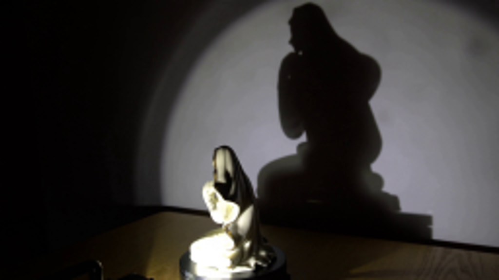
视觉工具实际返回图片 2
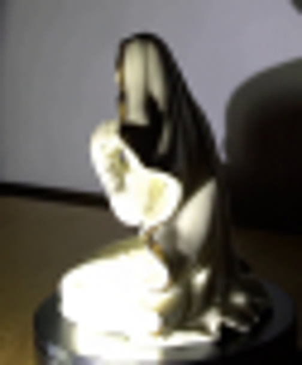
视觉工具实际返回图片 3
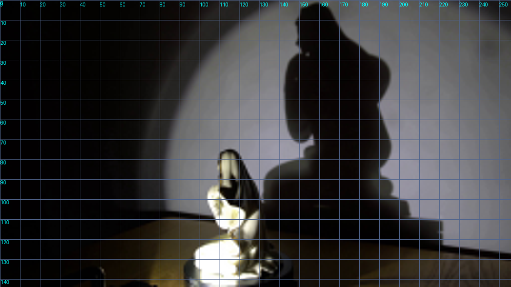
视觉工具实际返回图片 4

视觉工具实际返回图片 5
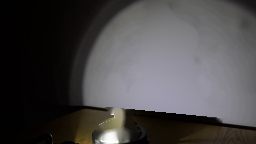
视觉工具实际返回图片 6
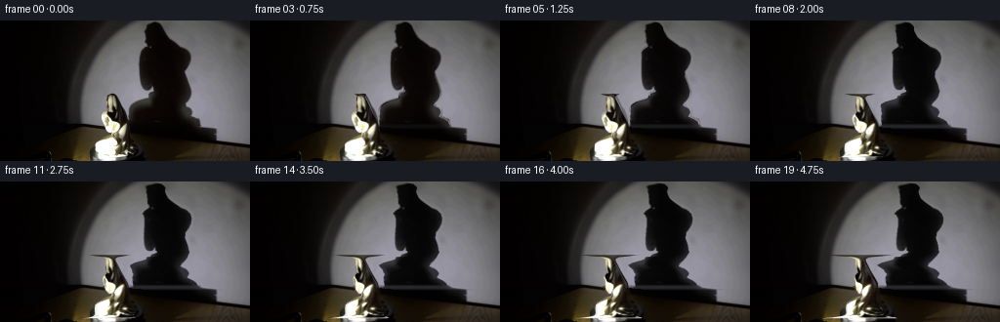
视觉工具实际返回图片 7
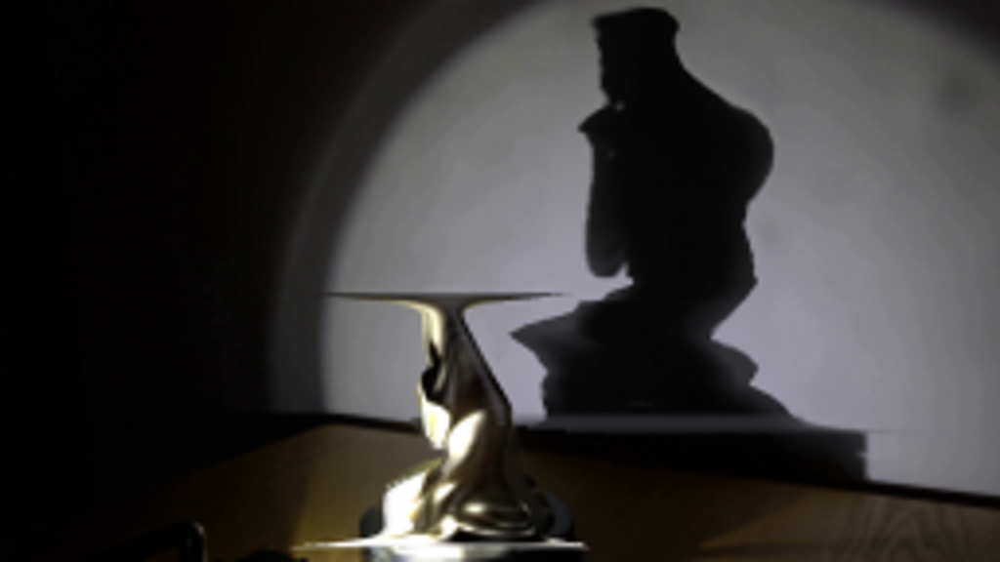
视觉工具实际返回图片 8
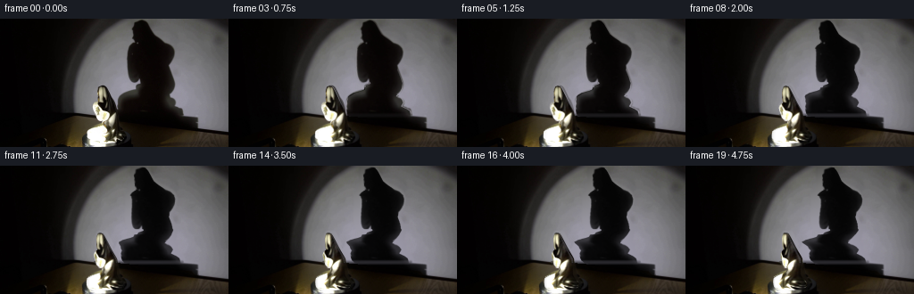
视觉工具实际返回图片 9

视觉工具实际返回图片 10

视觉工具实际返回图片 11
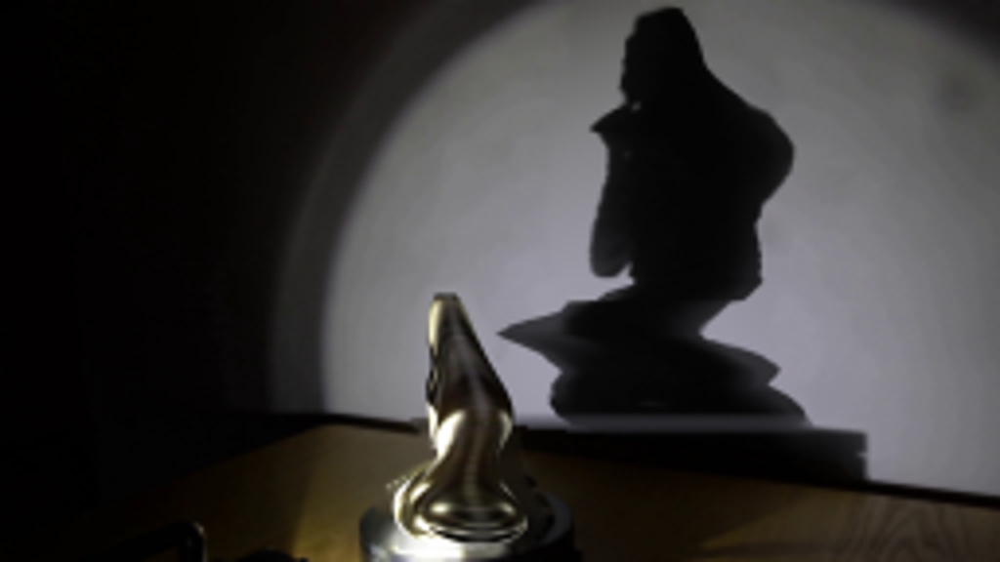
视觉工具实际返回图片 12
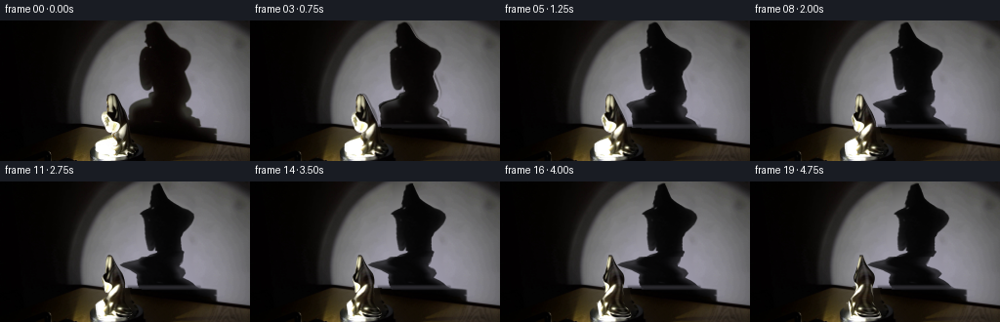
保存候选 6 份；完成命令 16 次；可验证图片返回 12 张。原始 API 响应与完整日志保留在本地。